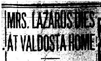

Obituary for Zelda "Jennie" (Lazarus) Kalin in the Jewish Times newspaper of Baltimore, Maryland from 1934.
Obituary for Freda (Lazarus) Rosenberg in the Florida Times-Union newspaper of Jacksonville from 1974.
Obituary for Reba (Lazarus) Bohrman in the Florida Times-Union newspaper of Jacksonville from 1973.
Obituary for Goodman Lazarus in the News & Observer newspaper of Raleigh, North Carolina from 1945.
An abstract and PDF of the obituary for B. (Benjamin) Pearlman of Charleston, South Carolina from 1909.
Obituary and funeral notice for Mr. Bill Lazarus of Trenton, Florida from 1987.
Obituaries for Nathan Zelkind of Lake City, Florida from 1964.
Obituary for Joe Lazarus of Valdosta, Georgia from 1957.
Obituary for Phillip Lazarus of Valdosta, Georgia from 1953.
Obituary for William Lazarus of Valdosta, Georgia from 1965.
Obituaries for Harry Lazarus of Valdosta, Georgia from 1946.
Obituaries for Sam Lazarus of Valdosta, Georgia from 1950.
Obituaries for Sarah (Lazarus) Mickelson of Valdosta, Georgia from 1951 (her death was at the end of 1950).
Obituaries for Maggie (Oppert) Lazarus of Valdosta, Georgia from 1962.
Obituaries for Israel Lazarus of Valdosta, Georgia from 1959.
Obituaries for Louis Lazarus of Valdosta, Georgia from 1947.
Death certificate for Baseva (Pearlman) Lazarus of Valdosta, Georgia from 1930.
 Obituaries for Baseva (Pearlman) Lazarus of Valdosta, Georgia from 1930.
An obituary for Harry Lazarus of Valdosta, Georgia from 1946. Updated with a link to his tombstone (#140489554) on FindAGrave).
 Obituary for Zelda "Jennie" (Lazarus) Kalin in the Jewish Times newspaper of Baltimore, Maryland from 1934.
Obituary for Zelda "Jennie" (Lazarus) Kalin in the Jewish Times newspaper of Baltimore, Maryland from 1934. An abstract and PDF of the obituary for B. (Benjamin) Pearlman of Charleston, South Carolina from 1909.
An abstract and PDF of the obituary for B. (Benjamin) Pearlman of Charleston, South Carolina from 1909. Obituaries for Nathan Zelkind of Lake City, Florida from 1964.
Obituaries for Nathan Zelkind of Lake City, Florida from 1964. Obituary for Joe Lazarus of Valdosta, Georgia from 1957.
Obituary for Joe Lazarus of Valdosta, Georgia from 1957. Obituary for Phillip Lazarus of Valdosta, Georgia from 1953.
Obituary for Phillip Lazarus of Valdosta, Georgia from 1953. Obituary for William Lazarus of Valdosta, Georgia from 1965.
Obituary for William Lazarus of Valdosta, Georgia from 1965. Obituaries for Sam Lazarus of Valdosta, Georgia from 1950.
Obituaries for Sam Lazarus of Valdosta, Georgia from 1950. Obituaries for Sarah (Lazarus) Mickelson of Valdosta, Georgia from 1951 (her death was at the end of 1950).
Obituaries for Sarah (Lazarus) Mickelson of Valdosta, Georgia from 1951 (her death was at the end of 1950). Obituaries for Maggie (Oppert) Lazarus of Valdosta, Georgia from 1962.
Obituaries for Maggie (Oppert) Lazarus of Valdosta, Georgia from 1962. Obituaries for Israel Lazarus of Valdosta, Georgia from 1959.
Obituaries for Israel Lazarus of Valdosta, Georgia from 1959. Obituaries for Louis Lazarus of Valdosta, Georgia from 1947.
Obituaries for Louis Lazarus of Valdosta, Georgia from 1947.